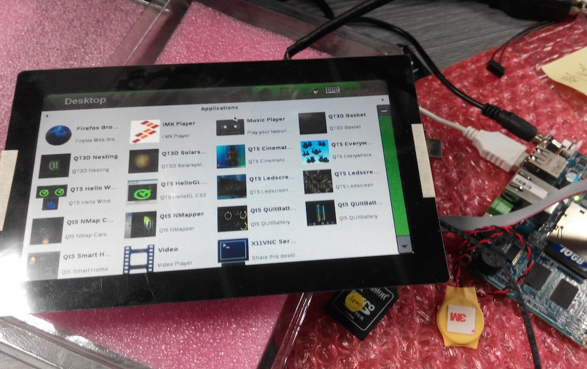

EMBUX is glad to introduce the yocto 1.6.2 test build running on the ICM-2011.

ICM-2011 is a 2.5’’ Pico-ITX ARM-based embedded board, powered by Freescale i.MX6, provides multi-integrated functions for easy implementation.
Please refer EMBUX website for latest update.
Information
- uboot: 2014.04
- kernel: 3.10.53
- rootfs: Yocto 1.6.2 (Daisy)
Below is the introduction for Yocto 1.6.2 (Daisy) from NXP (Freescale) document:
What is the Yocto Project?
“A Linux Foundation workgroup whose goal is to produce tools and processes that enable the creation of Linux distributions for embedded software independent of architecture”
NXP (Freescale) Yocto Project
- Linux distributed build system
- Replacement for LTIB
- Higher integration with community
- Flexible release targets
ICM-2011 Features
- NXP （Freescale） i.MX6 DualLite 1.0 GHz Cortex-A9
- On-board DDR3 1GB
- 1 x 18/24-bit LVDS output
- 1 x HDMI 1920x1080
- 1 x 10/100/1000 Mbps Ethernet
- 2 x USB 2.0 (1 x external + 1 x internal)
- 1 x RS-232 (8-wire), 2 x RS-232 (4-wire)
- 1 x RS-485 (3.5mm terminal block)
- 2 x CAN
- 1 x standard SD slot, 1 x SDIO
- Diversified OS support in Ubuntu/Yocto/Android/WEC7
- Low power consumption, 5V DC input